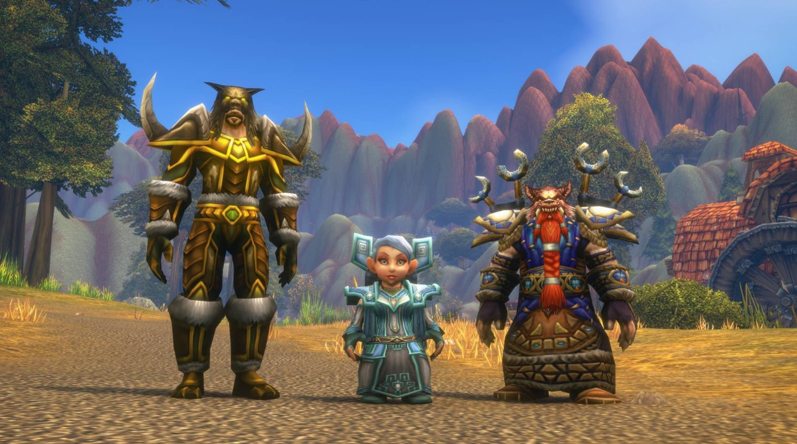

News › Podcast épisode 8
Podcast épisode 8 : ce que Blizzard prévoit pour les classes
20 novembre 2026
Dans le huitième épisode du podcast de WoW Forever, Aidan Moon et Kris Zierhut ont parlé des classes, de l'équipement et du JcJ. Voici ce qu'il faut retenir.

Équipement et confort
- Plus d'objets avec de la puissance des sorts sont prévus pour les niveaux 15 à 40. Bonne nouvelle pour les lanceurs de sorts en montée de niveau.
- Des sacs plus grands et de meilleurs outils de rangement arriveront plus tard.
- Les développeurs discutent cette semaine de l'accès aux recettes de métier, qu'ils pourraient simplifier. D'autres recettes arriveront avec les prochains patchs.
- Blizzard préfère donner son identité à chaque classe par les talents plutôt que par les ensembles d'armure.
- Les quêtes hebdomadaires doivent aider à garder une économie stable.
Classe par classe
- Voleur : tous ses arbres de talents ont été revus pour le rendre plus intéressant. L'équipe se demande encore si les immunités doivent exister.
- Druide Équilibre : son gameplay sera amélioré, surtout par les talents.
- Guerrier Armes : Blizzard cherche les bons changements, mais ne lui donnera pas plus de mobilité.
- Chaman Amélioration : il s'appuie maintenant davantage sur les caractéristiques physiques, d'où le patch du 17 novembre.
- Prêtre Discipline : des changements sont à l'étude pour rendre la spécialisation plus unique.
- Chasseur : des ajustements de talents arrivent ; l'équipe attend les données des raids.
- Démoniste : certains talents pourraient être fusionnés, et des fragments d'âme qui s'empilent ne sont pas exclus pour plus tard.
- Mage Givre : Blizzard ne veut pas que le mage ait trop de sorts instantanés.
- Paladin Sacré : il était en retard sur les soins de zone, ce qui explique certains talents.
- Les soigneurs en général pourraient être améliorés plus tard.
JcJ et Héritage
- L'équipement JcJ, avec plus d'Endurance, n'est pas encore disponible.
- Réinitialiser ses points d'Héritage coûte cher exprès : Blizzard ne veut pas qu'on le fasse trop souvent.
Source : JudgeHype, résumé de l'épisode 8 du podcast de WoW Forever, 19 novembre 2026.